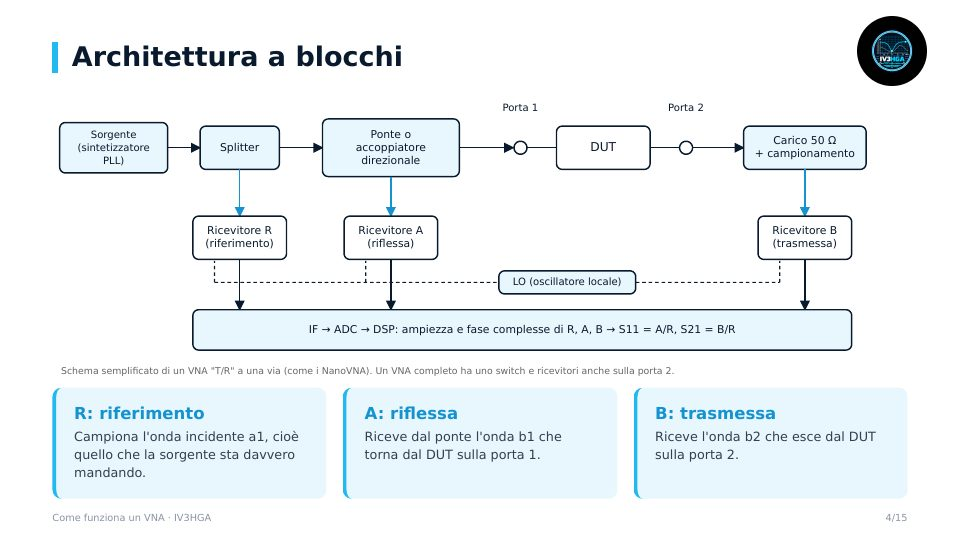

Capitolo 3 · Modulo 1
Come funziona un VNA
- Cosa sono le onde incidenti e riflesse e i parametri S
- Com'è fatto dentro: sorgente, ponte o accoppiatore, ricevitori R/A/B, LO e DSP
- Perché la direttività limita quello che puoi misurare
- Il modello d'errore a 3 e 12 termini e come la calibrazione SOL lo cancella
- SOLT, TRL, port extension, buone pratiche e specifiche che contano